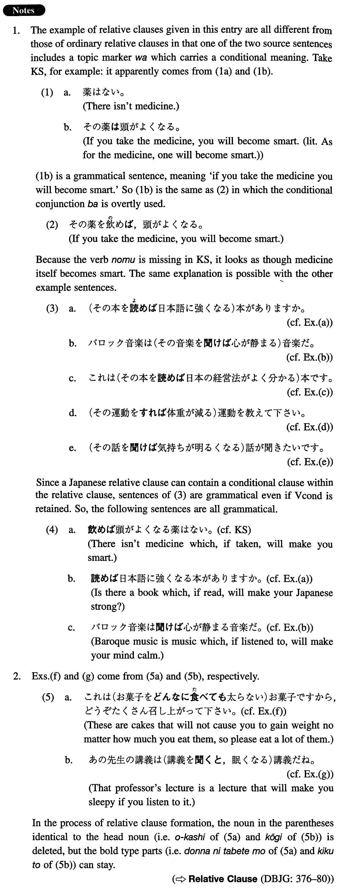

Relative Clause (I. 349)
- (ks).
- 頭がよくなる薬はない。
- There isn't medicine which makes you smart.
- (a).
- 日本語に強くなる本がありますか。
- Is there a book that will make you strong in Japanese?
- (b).
- バロック音楽は心が静まる音楽だ。
- Baroque music is music that soothes the mind.
- (c).
- これは日本の経営法がよく分かる本です。
- This is a book which enables us to understand Japanese management.
- (d).
- 体重が減る運動を教えて下さい。
- Please recommend any exercise that will reduce my weight.
- (e).
- 気持ちが明るくなる話が聞きたいです。
- I would like to hear something that will cheer me up.
- (f).
- これは太らないお菓子ですから、どうぞ沢山召し上がって下さい。
- These are non-fattening cakes, so please eat as much of them as you can.
- (g).
- あの先生の講義はすぐ眠くなる講義だね。
- That professor's lecture is a lecture that will make you sleepy.
